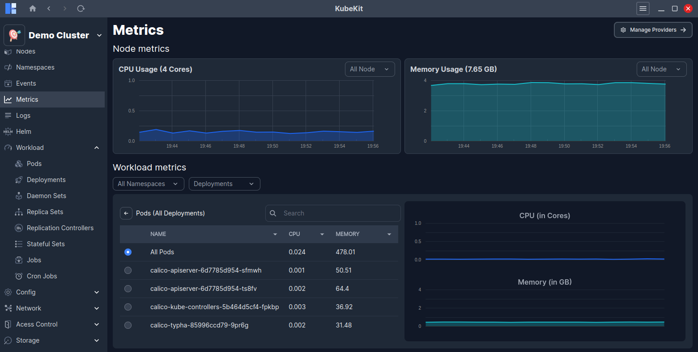
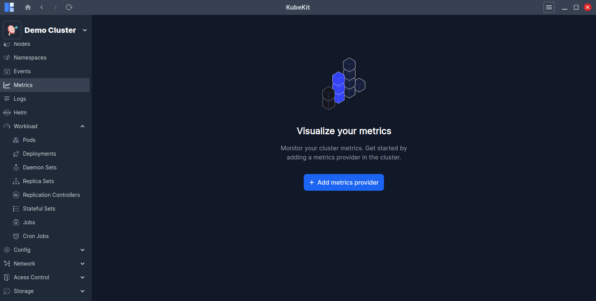
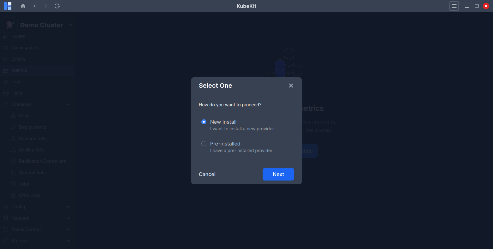
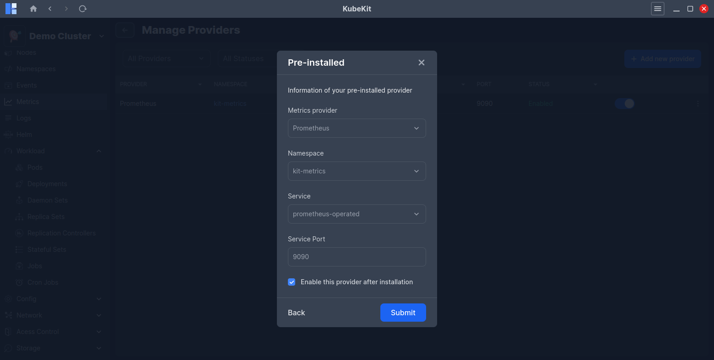
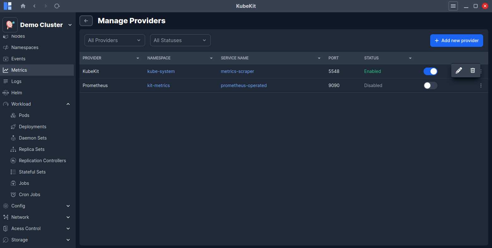

Metrics
Metrics are essential for monitoring and managing the health and performance of your Kubernetes cluster. They provide insights into resource utilization, application performance, and overall cluster stability.
If you have not installed a metrics provider like Prometheus or KubeKit in your cluster, you can add any metrics provider from here.
Individual Resource Metrics
KubeKit allows you to view metrics for individual resources such as pods, deployments, daemon sets, replica sets, replication controller, stateful set, jobs and cron jobs.

Central Metrics Management
From the KubeKit Cluster Dashboard, open the Metrics section using the left-sidebar navigation.
Here, at the top you will find the node metrics and below that, the workload metrics.

By clicking on the View Pods button from the workload metrics row, you can access detailed metrics for all the pods running under the selected resource.
On the right side graph, you will see real-time CPU and Memory usage for the selected resource.

Filter Options
You can filter node metrics by node name.
Also, you can filter workload metrics by namespace, deployment, replicaset, daemonset, replication controller, stateful set, job and node controller. This enables you to narrow the scope of resource metrics utilizations.
Addding a Metrics Provider
KubeKit supports two metrics providers: Prometheus and the built-in KubeKit metrics. If you have not installed any of these metrics providers in your cluster, you can add one by clicking on the Add Metrics Provider button.

You can proceed metrics provider installation by selecting New Install or Pre-installed option.

Select the New Install option to install either Prometheus or KubeKit metrics in your cluster. And, KubeKit will handle the installation process for you.
If you have pre-installed Prometheus in your cluster, you can select the Pre-installed option to link it with KubeKit by providing the namespace, service name, and port.

If you have pre-installed KubeKit in your cluster, KubeKit will automatically detect it and link it without requiring any additional information.
Managing metrics providers
KubeKit allows you to manage your metrics providers easily. You can switch between different metrics providers or remove an existing one as needed.
Click on the Manage Providers button on the top-right corner of the central metrics dashboard to view the currently configured metrics providers.
When creating a cluster with KubeKit, you have the option to choose one of two metrics providers: Prometheus or the built-in KubeKit metrics engine. If you skip this during creation, you still retain the flexibility to configure your preferred toolkit later.

You can enable or disable any of the configured metrics providers without unistalling them. Also, you can uninstall any metrics provider by clicking on the Uninstall button.
Also, you can edit the configuration of any pre-installed metrics provider by clicking on the Edit button.